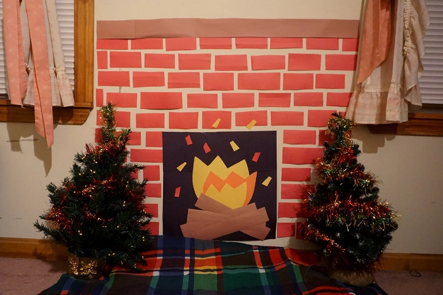
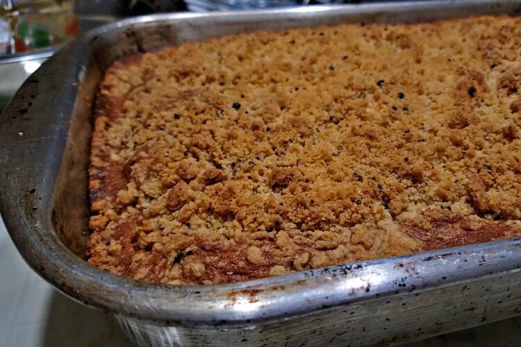
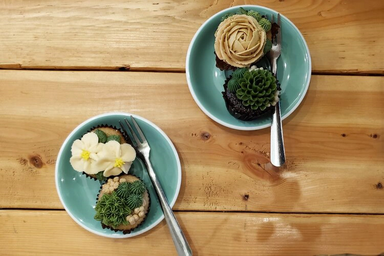
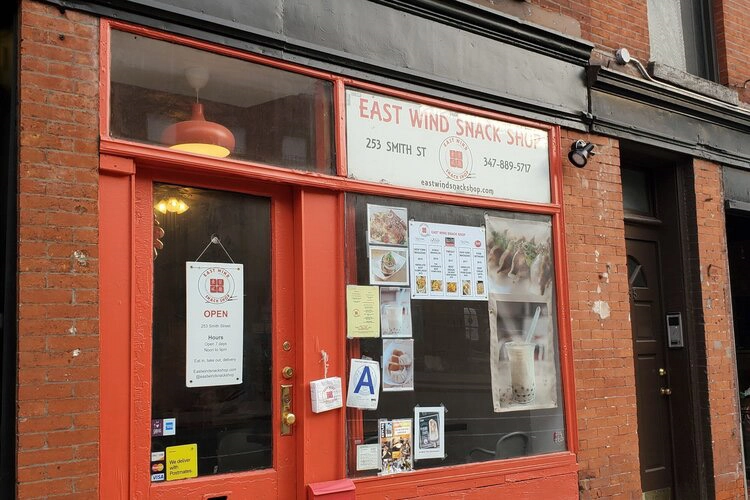
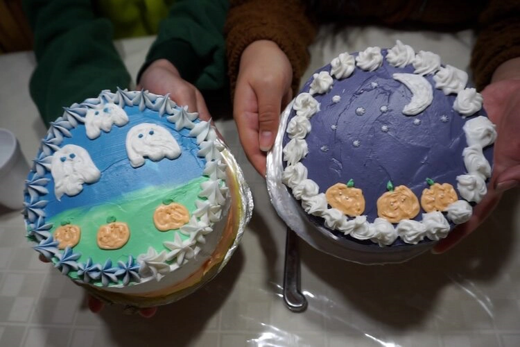

Fun | 12/17/20
If you’ve read some of our other holiday blog posts you’ll know that we’ve given you some ideas on ways you can make your room or home holiday movie night ready!
Fun | 12/13/20
It’s that time of the year again where we get to go all out with those holiday decorations and make our homes all festive and cozy.

Food | 12/10/20
After successfully making one recipe from Dessert Person and having many more recipes tagged for the future, it was clear what needed to be done.
Fun | 12/6/20
As the weather gets colder and the days until Christmas get closer, it's that time of year for holiday movies.

Food | 12/3/20
We took a leaf off Bon Appetit’s YouTube Channel and thought we’d try our very own Back to Back Pastry Chef Challenge! On top of that, we got to make our very first recipe from Claire Saffitz’s Dessert Person recipe book!
Fun | 11/22/20
Can you believe it's already been eight months of quarantine?! It's time for some new virtual things to do with your friends and family!
Fun | 11/19/20
Having recently gotten ourselves IPads and Procreate, we thought we’d put our drawing skills to the test by drawing portraits of one another.

Food | 11/15/20
Being a college student in NYC was kind of perfect because there was never a shortage of coffee shops and cafes nearby and we were always working, tired and in need of some caffeine.

Travel | 11/13/20
Ah yes, the great city of London, home of the queen’s thirty or so corgis and the most soothing and pleasing of English accents.

Food | 11/8/20
We’ve been Manhattan lovers for a while now, but one day back at our apartment we thought, why not wander a little into the great unknown that is called Brooklyn?

Fun | 11/5/20
We’ve been seeing a lot of cake frosting videos trending on Instagram lately that has completely mesmerized us so we thought we’d give it a go--turns out its a real frosting galore.
Food | 11/1/20
As if New York City wasn’t a vast jungle already, you’d be surprised to know that the plentiful number of Japanese restaurants in the city means that you can eat something different every day.